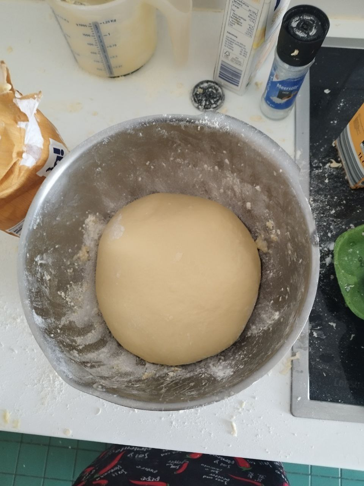
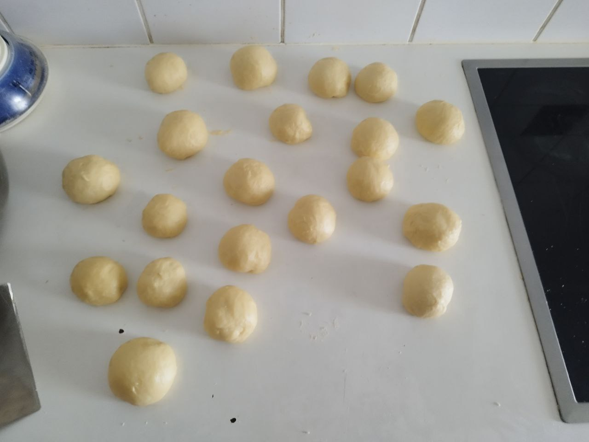
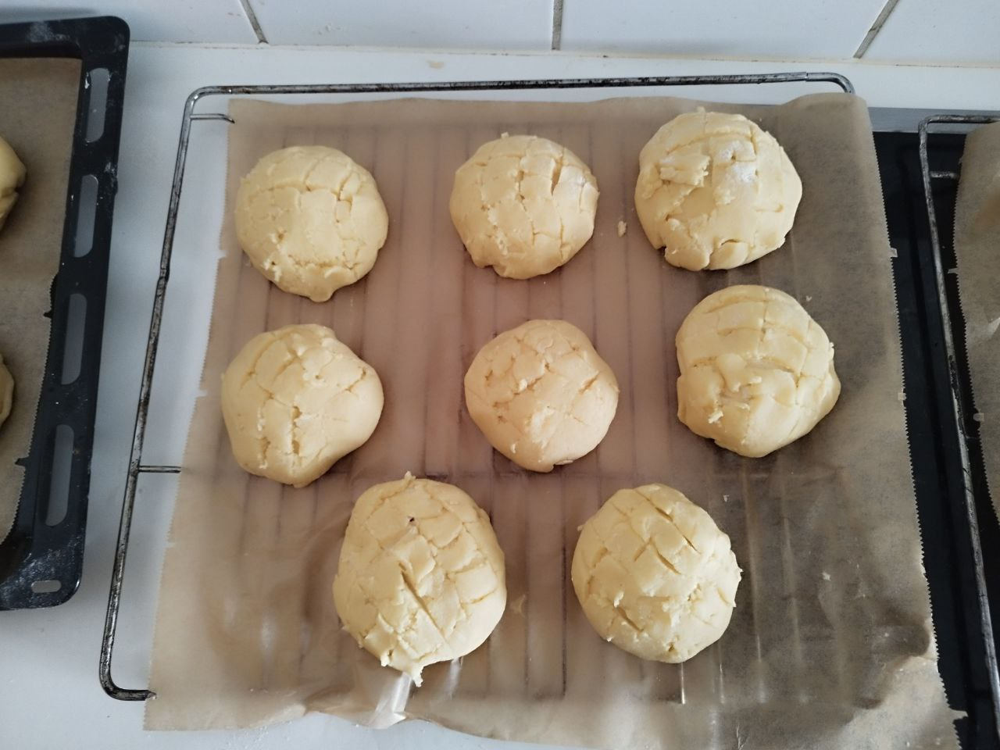
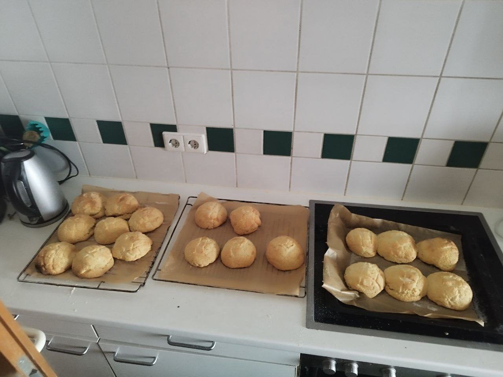
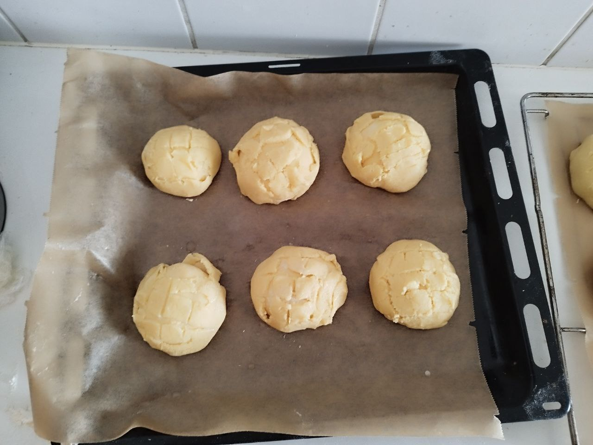
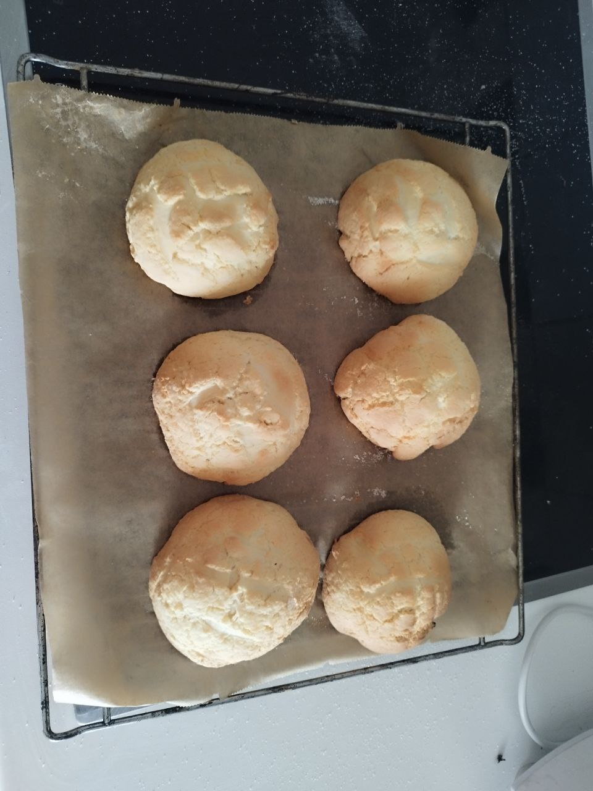
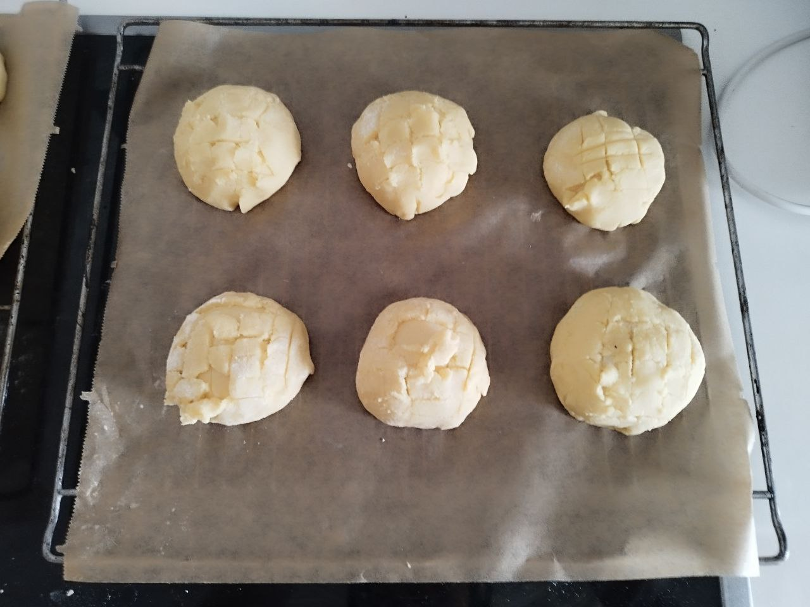
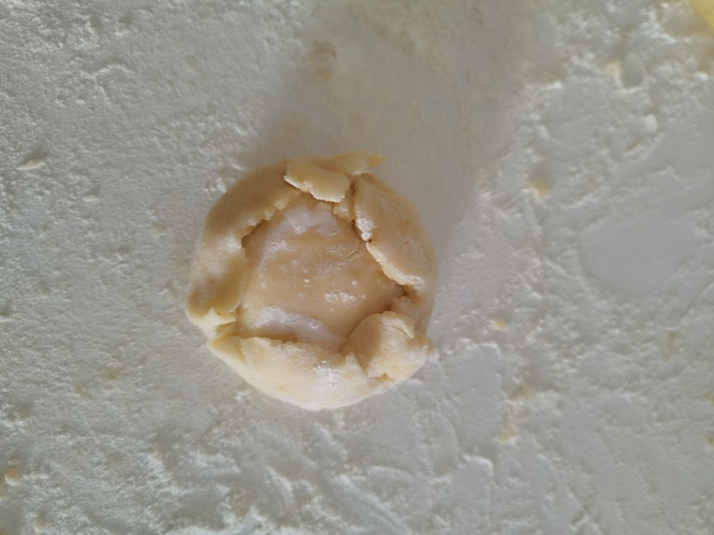
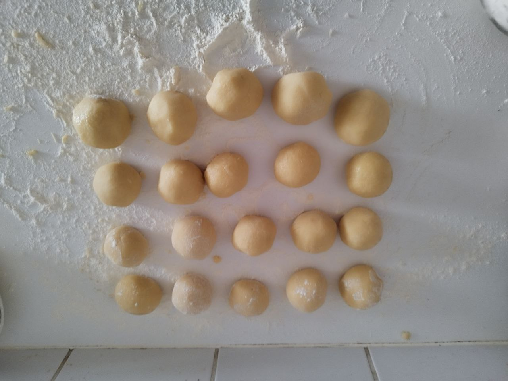
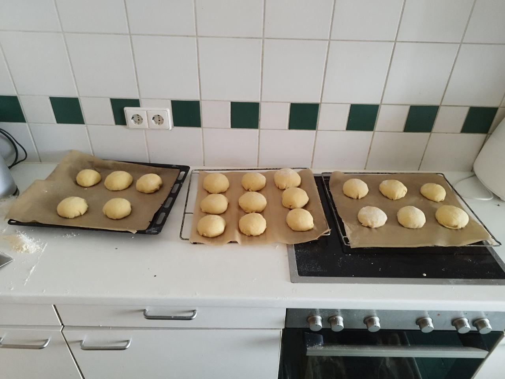

Melon Pan
Bread Dough
- 250
g
flour
- 1
Tbsp
corn starch
- 0.5
tsp
salt
- 50
g
sugar
- 5
g
dry yeast
- 1
egg
- 100
ml
milk
- 35
g
butter
Biscuit Dough
- 60
g
butter
- 100
g
sugar
- 1
egg
- 200
g
flour
- 0.5
tsp
baking powder
- 1
Tbsp
corn starch
- Starting with the bread dough, warm up milk in a pot and add butter
- Make sure the milk is not boiling and stir until butter is dissolved (1)
- Mix flour, starch, sugar, salt and yeast
- Stir egg into milk and slowly pour into dry ingredients while stirring
- Mix for about 2min until the dough comes together
- Knead doudh until smooth
- Rest for 1-2h until the volume has doubled
- For the biscuit dough, mix butter with sugar, stir well
- Mix in flour, egg, baking powder and corn starch until the dough comes together
- Continue kneading until the dough is smooth
- Separate dough into 10 pieces, form into balls and rest in the fridge for at least 10min
- Knead the bread dough again, then separate into 10 balls
- Rest bread dough for another 15min on a baking sheet
- Flatten the biscuit dough into circles of about 10cm in diameter (about 0.5cm thick)
- Wrap the circles around the bread balls and dip into extra sugar (2)
- Score the pans in a grid pattern and rest for another 30min-1h on a baking sheet
- Preheat oven to 180C convection
- Bake pans for 13-15min until the outside is slightly browned (3)
Notes
(1) Alternatively, directly add milk and egg to dry ingredients and knead in butter when the dough is mixed
(2) The bread pieces do not have to be fully covered, the bottom can be empty
(3) Be careful not to overbake, otherwise they will dry out









